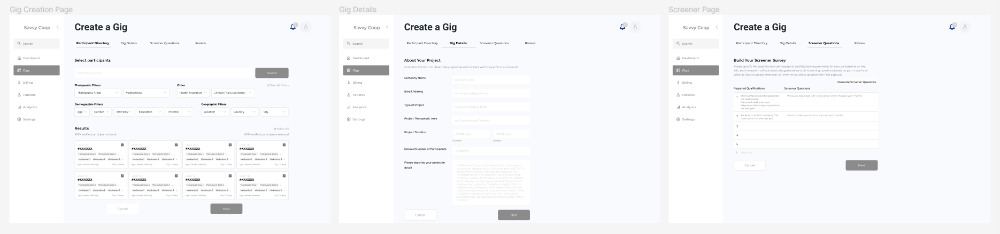
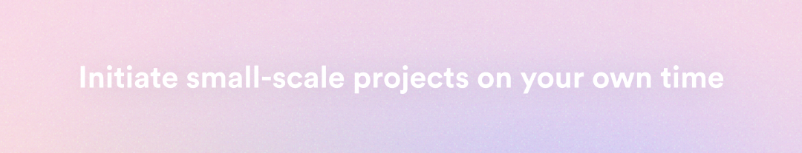

JAMES
HUA.
SAVVY
COOPERATIVE.
As a patient-owned co-op, Savvy Cooperative connects
people with opportunities to share their health experiences with researchers. Our team identified an opportunity
to expand Savvy Cooperative’s current capabilities by developing a self-service portal for clients to
reach patients, increasing the company’s recruitment power.
MY ROLE
As a User Experience Designer on a team of four, I contributed an equal role in early stage research and
interviews. Then, I took the lead in establishing a UI
Design System to enable all team members to design consistent and scalable interfaces. Lastly, I
polished off and prototyped interactions for the final interface.
TEAM
Sumaiya Elahi
Tanvi Jain
Kamayani Gupta
SKILLS
In-depth Interviews
Participatory Design
Wireframe
UI Design
PROGRAMS
Figma
Zoom
TIMEFRAME
6 Months
OUR
CHALLENGE.
As designers, we found it our mission to empower other researchers to recruit more people. Savvy Cooperative is expanding, and recently, has struggled to meet the recruitment demands of some clients due to time and labor constraints. Their current capabilities are limited by person-to-person interactions (Zoom, phone, email), which caps the number of patient insights gained overall.
THE
SOLUTION.
A self-service, B2B portal that enables clients to complete smaller, less complex recruitment projects on their own. The power of recruitment is now in the hands of the clients; they can recruit participants on their own time and budgets.
More capabilities means more participants reached. More participants reached means more healthcare experiences shared, which improves our impact on the state of care.
RESEARCH.
To design the space in which this opportunity exists, our team sought to understand all current operations at
Savvy. We mapped out all capabilities, tools, and platforms used. Since this was also an internal
problem, our team connected with project management to understand their experiences. Team members emphasized
that there was a need to:
☆ Minimize back and forth on communications.
☆ Automate or offload repetitive filtering tasks.
☆ Standardize current practices.
A lack of these qualities has prevented Savvy from taking on more projects from more clients, and has
ultimately reduced their overall impact.
Our goal was to understand how these capabilities came together holistically, which led us to conduct in-depth interviews with 6 major pharmaceutical companies. We encouraged stakeholders to engage in participatory design sessions to collaboratively detail their journeys and pinpoint opportunities.
INSIGHTS.
After identifying opportunities and synthesizing major pain-points, our team devised 3 major insights to carry forward.

Upon discussion of insights with the founder, we decided that a form of self-service recruitment for clients, that operates in parallel to manual recruitment, would enable Savvy to best expand their reach.
USER
FLOW.
Our team soon realized that the needs of Savvy clashed with the needs of clients: how were we going to implement a self-service portal if clients wanted human connection?
So, moving forward, it was important for our team to balance the communication needs of stakeholders while maintaining business goals of expedited service. To deliver value to both sides, we mapped out what could be offloaded, what should be automated, and what must be kept the same. For our user flow, we inserted intentional moments of confirmation for clients to quickly double check their work, and touchpoints in which a team member would review the final result before publishing.
WIREFRAMES.
Our team translated these flows into low-fidelity wireframes to visualize change and prepare for usability testing.
USABILITY
TESTING.
We specifically shipped this MVP to test our biggest assumption: would clients feel comfortable using this self-service solution? After testing this flow, we discovered that we needed to make options clearly available for contact and utilize a more prominent confirmation screen.

We also took note of & incorporated a few smaller points of improvement for our final design:
1. Clients felt uncomfortable selecting participants without inputting basic project details first.
2. Clients had difficulty navigating through the menu and specific fields on the project form, leading to a
low task completion rate.
Finally, we felt confident enough to begin our next iteration. As the lead User Interface Designer on this
team, I established a full UI Design System on Figma
and prototyped each interaction.
SELF-SERVICE
PORTAL.
Introducing the Savvy Cooperative self-service enterprise portal for pharmaceutical clients. Plan and execute your next recruitment gig on your own time and budget.
IMPACT
& RESULTS.
Measuring success is at the heart of our design process. It is how we confirm or reject our initial assumptions, and it is how we measure how we grow as designers. For this project, our team was proud to have achieved impact in two areas: design/usability and business goals.
REFLECTIONS.
During this project, I was thoroughly challenged with confronting ambiguity all the time. It was the first
time I experienced working with poor documentation of practices and infrastructure. It took a lot of
communication and collaboration with my team to discover our path, but it was all worth it.
If I were to approach this project again with the knowledge I know now, I definitely would have ensured that
our team divided roles and accountabilities sooner. We had only designated roles towards the end, and our
process could have been smoother had we done so initially.
All in all, I have grown so much as a designer during this process, specifically in the realm of Interface
Design, and I'm eager to learn even more! Take a look at the UI Design System I established to make this project possible.